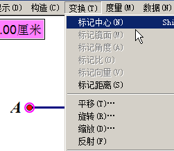
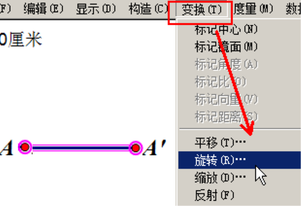

几何画板基础入门教程
作者：TeliuTe 来源：基础教程网
九、平移和旋转 返回目录 下一课平移可以在其他位置复制出一个图形，旋转则是按角度来复制；
1、平移
1）画一条3厘米长水平线段，先用画点工具画一个点；
2）点菜单“变换 - 平移”，出来对话框，设定直角坐标系、水平3厘米、垂直0，预览一下；
3）点“平移”就在原来点的右边3厘米处，得到一个新的点，构造一条线段；
4）选择A点，点菜单“变换 - 标记为中心”，或者双击一下作为旋转中心；

5）选中线段和两个端点，点菜单“变换 - 旋转”；

6）在出来的对话框里，设置角度为45度，点“旋转”；
7）继续点菜单“变换 - 平移”，我们把旋转出来的线段，平移一下；
8）平移对话框，用上次的参数3厘米，点“平移”可以得到一条平行线；
9）连接另外两个点，就可以得到一个平行四边形；
本节学习了平移和旋转的基础知识，如果你成功地完成了练习，请继续学习下一课内容；
本教程由TeliuTe制作|著作权所有
基础教程网：http://teliute.org/
美丽的校园……
转载和引用本站内容，请保留作者和本站链接。